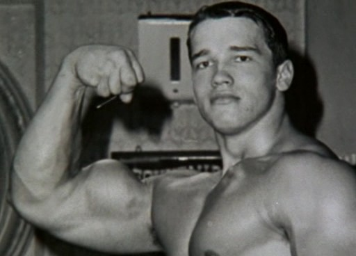
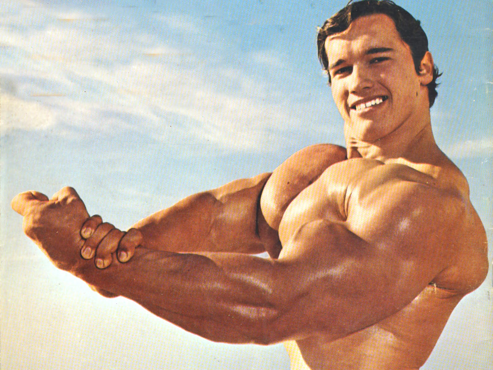
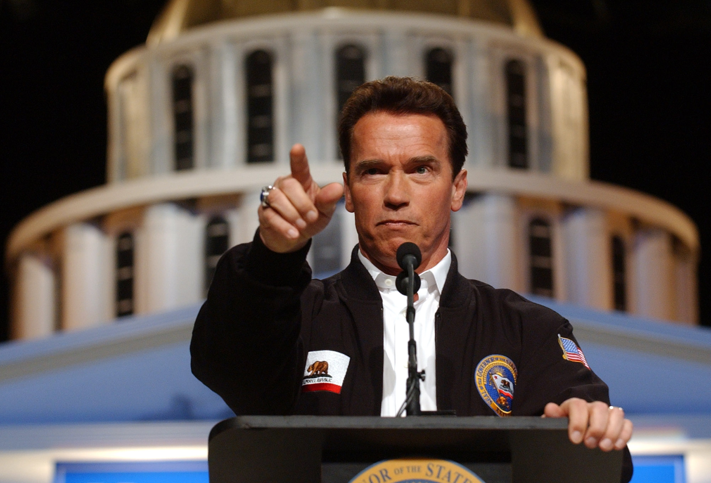
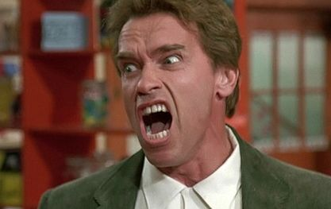
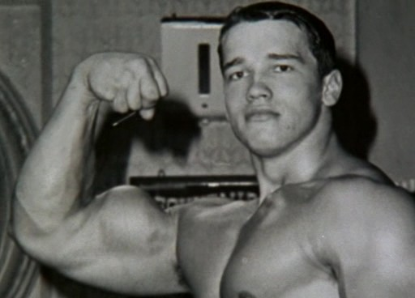
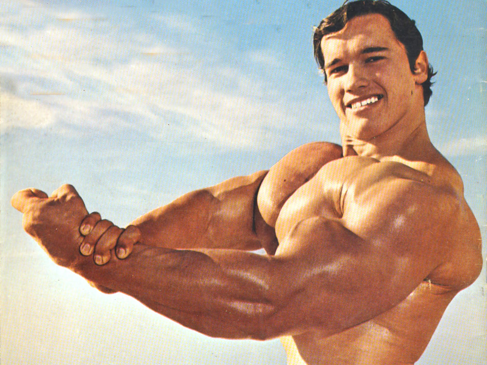
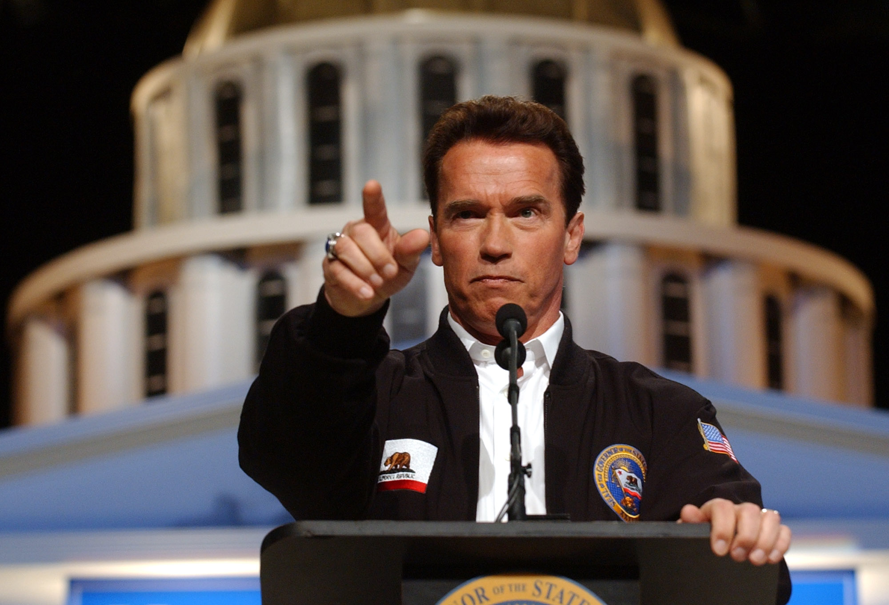
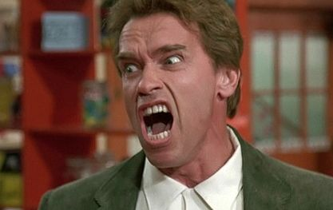

"Strength does not come from winning. Your struggles develop your strengths. When you go through hardships and decide not to surrender, that is strength."
Arnold Schwarzenegger first gained fame as a body builder, using that as a launching point to become a huge Hollywood star and, later, the governor of California.
Young Years

Arnold Schwarzenegger was born on July 30, 1947, near Graz, Austria. Schwarzenegger's childhood was far from ideal. His father, Gustav, was an alcoholic police chief and one-time member of the Nazi Party, who clearly favored Arnold's brother over his gangly, seemingly less athletic younger son. When Schwarzenegger immigrated to the United States in 1968, he helped propel the bodybuilding into the mainstream, culminating in the 1977 documentary, Pumping Iron, which tells the tale of Schwarzenegger's defense of his Mr. Olympia crown.
Professional Bodybuilding

Schwarzenegger was known as the Styrian Oak, or Austrian Oak, in the bodybuilding world, where he dwarfed his competition. He won his first amateur Mr. Universe title in 1967. After moving to California in 1968 to train and compete in bigger events in the United States, he won four more Mr. Universe titles and then the professional Mr. Olympia title six years in a row (1970–75) before retiring. He surprised the bodybuilding world by returning to competition one more time to claim the Mr. Universe title in 1980. Bodybuilding was the subject of several of his books, including the autobiographical Arnold: The Education of a Bodybuilder (1977; cowritten with Douglas Kent Hall) and The New Encyclopedia of Modern Bodybuilding (1998; cowritten with Bill Dobbins).
Movie Career
 Arnold Schwarzenegger is an actor who has appeared in over 30 films, and has also ventured into directing and producing. He began his acting career primarily with small roles in film and television. For his first film role, he was credited as "Arnold Strong", but was credited with his birth name thereafter. He has appeared mainly in science fiction, action, and comedy films. In addition to films and television, he has appeared in music videos for AC/DC, Bon Jovi, and Guns N' Roses.
Arnold Schwarzenegger is an actor who has appeared in over 30 films, and has also ventured into directing and producing. He began his acting career primarily with small roles in film and television. For his first film role, he was credited as "Arnold Strong", but was credited with his birth name thereafter. He has appeared mainly in science fiction, action, and comedy films. In addition to films and television, he has appeared in music videos for AC/DC, Bon Jovi, and Guns N' Roses.
- Stay Hungry (1976)
- Pumping Iron (1976)
- Conan The Barbarian (1982)
- The Terminator (1984)
- Commando (1985)
- Predator (1987)
- Total Recall (1990)
- Terminator 2: Judgment Day (1991)
- True Lies (1994)
- Teminator 3: Rise of Machine (2003)
Political Involvement

Schwarzenegger became a U.S. citizen in 1983 and married reporter Maria Shriver in 1986. He is a registered Republican. He describes himself as fiscally conservative and socially moderate. During the 1990s he became increasingly active in the Republican Party at both the state and national levels, and in 2003 he was elected governor of California in a recall election. In his initial years in office, Schwarzenegger pushed for a number of restrictive measures that proved unpopular, especially with organized labour. Nevertheless, he was reelected in 2006. He earned key legislative victories on issues relating to the environment, including a landmark act to reduce greenhouse-gas emissions in California, and successfully advocated for ballot propositions to reform the state’s redistricting process and political-primary format.
Fun Facts

- The name Schwarzenegger means black plowman/ploughman
- His father Gustav was a former military officer who later became a police officer.
- Arnold had a one year old other brother, Meinhard, who died in a car accident when he was in his twenties.
- Arnold was raised in a very strict catholic home.
- Called by the Guiness Book of World Records, "the most perfectly developed man in the history of the world."
- He Served as Chairman of the President's Council on Physical Fitness (US) (1990
- Noted fan of cigar smoking.
Bodybuilding Awards
Title
Year
Mr. Europe - amateur in Germany
1966
NABBA Mr. Universe - amateur in London
1966
NABBA Mr. Universe - professional in London
1969
NABBA Mr. Universe - professional in London
1970
IFBB Mr. Olympia in New York
1970
IFBB Mr. Olympia in Paris
1971
IFBB Mr. Olympia in Essen
1972
IFBB Mr. Olympia in New York
1973
IFBB Mr. Olympia in New York
1974
IFBB Mr. Olympia in Pretoria
1975
IFBB Mr. Olympia in Sydney
1980
Young Years
 Arnold Schwarzenegger was born on July 30, 1947, near Graz, Austria. Schwarzenegger's childhood was far from ideal. His father, Gustav, was an alcoholic police chief and one-time member of the Nazi Party, who clearly favored Arnold's brother over his gangly, seemingly less athletic younger son. When Schwarzenegger immigrated to the United States in 1968, he helped propel the bodybuilding into the mainstream, culminating in the 1977 documentary, Pumping Iron, which tells the tale of Schwarzenegger's defense of his Mr. Olympia crown.
Professional Bodybuilding
 Schwarzenegger was known as the Styrian Oak, or Austrian Oak, in the bodybuilding world, where he dwarfed his competition. He won his first amateur Mr. Universe title in 1967. After moving to California in 1968 to train and compete in bigger events in the United States, he won four more Mr. Universe titles and then the professional Mr. Olympia title six years in a row (1970–75) before retiring. He surprised the bodybuilding world by returning to competition one more time to claim the Mr. Universe title in 1980. Bodybuilding was the subject of several of his books, including the autobiographical Arnold: The Education of a Bodybuilder (1977; cowritten with Douglas Kent Hall) and The New Encyclopedia of Modern Bodybuilding (1998; cowritten with Bill Dobbins).
Movie Career
Arnold Schwarzenegger is an actor who has appeared in over 30 films, and has also ventured into directing and producing. He began his acting career primarily with small roles in film and television. For his first film role, he was credited as "Arnold Strong", but was credited with his birth name thereafter. He has appeared mainly in science fiction, action, and comedy films. In addition to films and television, he has appeared in music videos for AC/DC, Bon Jovi, and Guns N' Roses.
- Stay Hungry (1976)
- Pumping Iron (1976)
- Conan The Barbarian (1982)
- The Terminator (1984)
- Commando (1985)
- Predator (1987)
- Total Recall (1990)
- Terminator 2: Judgment Day (1991)
- True Lies (1994)
- Teminator 3: Rise of Machine (2003)
Political Involvement
 Schwarzenegger became a U.S. citizen in 1983 and married reporter Maria Shriver in 1986. He is a registered Republican. He describes himself as fiscally conservative and socially moderate. During the 1990s he became increasingly active in the Republican Party at both the state and national levels, and in 2003 he was elected governor of California in a recall election. In his initial years in office, Schwarzenegger pushed for a number of restrictive measures that proved unpopular, especially with organized labour. Nevertheless, he was reelected in 2006. He earned key legislative victories on issues relating to the environment, including a landmark act to reduce greenhouse-gas emissions in California, and successfully advocated for ballot propositions to reform the state’s redistricting process and political-primary format.
Fun Facts

- The name Schwarzenegger means black plowman/ploughman
- His father Gustav was a former military officer who later became a police officer.
- Arnold had a one year old other brother, Meinhard, who died in a car accident when he was in his twenties.
- Arnold was raised in a very strict catholic home.
- Called by the Guiness Book of World Records, "the most perfectly developed man in the history of the world."
- He Served as Chairman of the President's Council on Physical Fitness (US) (1990
- Noted fan of cigar smoking.
Bodybuilding Awards
| Title | Year |
|---|---|
| Mr. Europe - amateur in Germany | 1966 |
| NABBA Mr. Universe - amateur in London | 1966 |
| NABBA Mr. Universe - professional in London | 1969 |
| NABBA Mr. Universe - professional in London | 1970 |
| IFBB Mr. Olympia in New York | 1970 |
| IFBB Mr. Olympia in Paris | 1971 |
| IFBB Mr. Olympia in Essen | 1972 |
| IFBB Mr. Olympia in New York | 1973 |
| IFBB Mr. Olympia in New York | 1974 |
| IFBB Mr. Olympia in Pretoria | 1975 |
| IFBB Mr. Olympia in Sydney | 1980 |